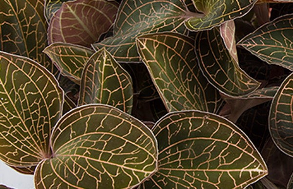
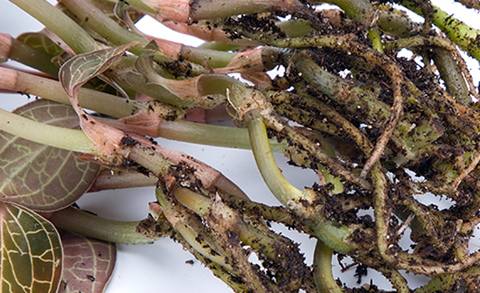
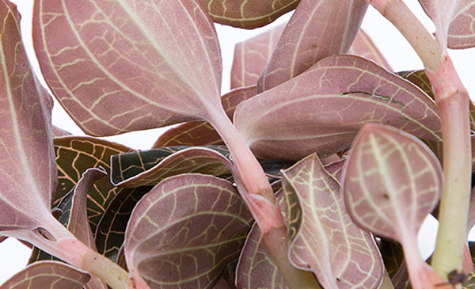
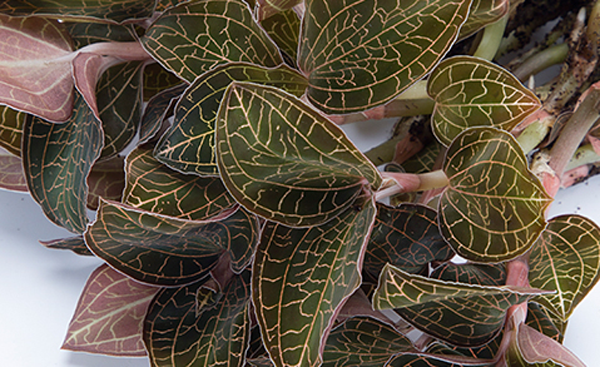

金线莲想必大家应该见过，但是不知道它到底叫什么名字，有什么作用。其实作为兰科植物，金线莲不仅美观，还可以入药治疗多种疾病，功效显著。下面就为大家详细介绍一下福建金线莲的功效与作用，看看有“金草”之称的金线莲究竟有哪些神奇之处。
1、清热解毒、凉血散瘀

在中国的各类古籍中，对金线莲的功能描述，清热凉血这一功效都被放在首位。所谓的清热凉血就是指的清热解毒、凉血散瘀，对于湿热毒引起的体内湿热郁结，导致出现常见的便秘、痤疮、皮炎、湿疹等症状有很好的治疗效果。像血热的人群，血气上涌、血热燥盛而出现内热烦躁、舌苔发红、甚至吐血的情况，包括女性出现的崩漏都可以使用金线莲来治疗。
2、祛风利湿
在福建省出台的中药材标准中，明确记载了金线莲的功效与作用，其中就描述了金线莲作为民间的一种珍惜草药，药性平和，有清热凉血、祛风利湿的功效，对于支气管炎、小儿急惊风、肾炎、膀胱炎、风湿性关节炎和糖尿病及毒蛇咬伤都有很好的疗效。尤其是中老年人有上述症状问题的，金线莲有更为显著的作用。小孩子突发感冒、咳嗽、持续高烧，金线莲也有很好的预防和辅助治疗作用。
3、强心利尿

古籍中纪录金线莲有治咯血的功效，这在现代生物学角度可以认为金线莲有强心的功效作用，通过对它的化学成分和含量的明确，了解到其中含有多种黄酮类、甾体类、生物碱和强心苷类具有药理活性的物质，以及有种类较多的微量元素和氨基酸等物质。同时闽东地区经常用它来祛风湿，消除腰膝的痹痛，能有通络养血的效果，能有效的治疗风湿关节病。
4、养肝固肾
金线莲的有效药理活性成分能够渗透并直接作用于肝细胞膜，为肝细胞膜提供一层保护屏障，在受到刺激时保护肝细胞膜不受损伤。同时也能加快肝脏的新陈代谢，促进肝细胞的复原和再生。金线莲入肾、肺、心三经，能平衡阴阳、扶正固本，有固肾滋补的功效。像经常有喝酒应酬、工作劳累的商务人士，金线莲就可以起到解酒、养肝固肾的功效，全面提高抵抗力。
1、对心血管系统的作用
研究证明，金线莲能有效提高血液中胰岛素的含量，降低血糖。在预防和治疗治疗高血压、高胆固醇、脑中风、动脉硬化和狭心症方面效果显著。民间有用福建金线莲煮水的偏方，发现对治疗糖尿病有很好的功效。
2、对呼吸系统的作用

金线莲对肺粘膜的保护和修复作用很强，能促进肺内细胞的新生，达到开胸解郁的效果，改善肺功能。对气管内粘膜的黏质分泌有抑制作用，从而能保证呼吸通道的畅通，对治疗肺结核和气管炎有很好的疗效，能有效消除呼吸困难的症状。
3、祛斑养颜、抗氧化
金线莲有清热泻火的功效，对油脂分泌有很好的抑制作用，还能调节内分泌，所以能有效改善青春痘、粉刺等皮肤状态，并淡化色斑、雀斑以及老年斑。加上金线莲是一种天然抗氧化剂，能促进皮肤细胞的血液循环，加快新陈代谢，使得皮肤抗氧化、防衰老能力提高，变得光泽有弹性，达到养颜的功效。
4、消炎镇痛

福建金线莲是天然的抗菌体，对抑制细菌细胞的繁殖有很好的作用，尤其是对肺部细胞组织效果更为显著。在对小鼠进行的药理实验中，发现金线莲能使小鼠活跃度降低，并延长了小鼠的痛觉反应时间，这说明了金线莲有一定的抗菌消炎、镇痛的功效。能用来治疗跌打损伤、毒虫咬伤、咽喉肿痛和口疮等。
5、抑制肿瘤细胞在上海中医教授的临床实验上发现，在接受了放疗的实验动物身上，适当的摄入金线莲后，实验动物的生命得到了延长。除了能有抑菌镇痛的效果，金线莲还能有天然的抑制肿瘤细胞生长的作用，并且能加速和诱导癌症细胞死亡，阻断癌症细胞的基本组织结构的生成，这对于现代医学的癌症防治起到了很大贡献。
作为有着多种显著功效的珍稀草药，金线莲在市场上的售卖就难免会有真假掺杂的情况。像市面上有的金线莲包装各式各样，那么如何辨别是不是真的金线莲呢?第一步先观察叶脉，要是金(白)色网状脉络，金色的是福建金线莲，白色的台湾金线莲;其次看茎梗，要茎梗细长，叶基的位置要有鞘，与茎梗形成茎节;三要看叶片颜色，叶片边缘光滑，叶面黄绿色、背面暗紫红色的是福建金线莲，叶面墨绿色、背面暗紫红色的是台湾金线莲。最后叶片完整、香气浓郁的是上品。
结语：关于福建金线莲的功效我们就介绍到这里，金线莲作为珍稀草药，神奇之处很多，现在也有规范的人工种植，越来越多的地方会用到。希望大家能对金线莲多些了解，正确的认识和使用这种中药材。